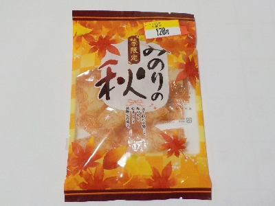

小原製菓の「季節限定みのりの秋 かぼちゃプリン」
更新日 : 2025/12/08

製造が小原製菓さんで、販売が戸田屋さんです。
半額だったので興味本位で買いました。
カボチャプリン味ですが、カボチャプリンを食べたことないかも？なので味は比較できませんでした。
原材料にカボチャは書いてなかったです。甘い寒天ゼリーだなと思いながら食べました。
長野県飯田市鼎中平2271-1
更新日 : 2025/12/08

製造が小原製菓さんで、販売が戸田屋さんです。
半額だったので興味本位で買いました。
カボチャプリン味ですが、カボチャプリンを食べたことないかも？なので味は比較できませんでした。
原材料にカボチャは書いてなかったです。甘い寒天ゼリーだなと思いながら食べました。